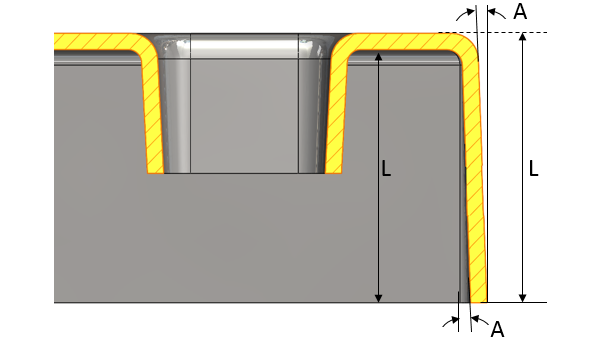

ダイカストにおける引き抜き方向に沿った抜き勾配角度は、面の長さ、面の種類（外側または内側）、および選択された材料に依存します。
金型から部品を容易に引き抜くために、引き抜き方向に沿って部品面に最小限の抜き勾配角度が適用されていることを確認してください。部品面に適用される抜き勾配角度は、面の長さ、選択された材料、ならびにダイカスト工程で要求される抜き勾配公差の厳しさによって異なります。適切な抜き勾配角度を設定することで、エジェクタピンがモールド／コアから部品を押し出しやすくなります。
部品の面長さに基づく抜き勾配角度は、推奨値以上である必要があります。
注記:
各種材料に対する最小抜き勾配角度の推奨値は、NADCA の提供によるものです。詳細については、NADCA「Product Specification Standards for Die Castings」、2009年 第7版を参照してください。
各種材料に対する最小抜き勾配角度の推奨値は、NADCA の提供によるものです。

L = 面の長さ（内側／外側）
A = 抜き勾配角度（内側／外側）
注記:
抜き勾配定数 C に表示される値は、以下に依存します：
メートル単位系の場合、値は NADCA ハンドブックに mm 単位で記載されています。
インチ単位系の場合、値は英国単位系に基づきインチ単位で記載されています。